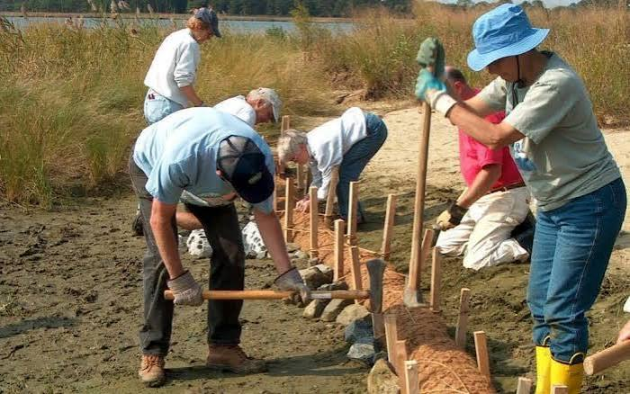

Eighteen kilometres of coastline. One shared hope.
COOPERATION AND CLIMATOLOGY UNION started as a handful of volunteers picking plastic off Aboadze beach. Today we're a registered NGO working across the Western Region.
How COOPERATION AND CLIMATOLOGY UNION began
In 2019, four university graduates from Takoradi Technical University noticed the rapid disappearance of mangrove cover along the Anankwari river estuary. What started as monthly weekend clean-ups grew into a registered NGO by 2020, with its first funded mangrove nursery opening in Aboadze the same year.
By 2022, COOPERATION AND CLIMATOLOGY UNION had expanded into water and sanitation work after a cholera scare in a fishing settlement revealed how few households had access to treated water. Climate education in schools followed in 2023, and our recycling co-operative launched in 2024.
- 2019
First community beach clean-up
12 volunteers, 400kg of waste removed from Aboadze beach.
- 2020
Official NGO registration & first mangrove nursery
Registered with the Department of Social Welfare; nursery opens with 3,000 seedlings.
- 2022
Water & Sanitation programme launches
First borehole rehabilitated in Anaji in partnership with the Metro Assembly.
- 2024
Recycling co-operative formed
18 women trained in plastic sorting and resale, doubling household incomes.

Our Vision
A Western Region coastline where mangroves thrive, every household has clean water, and communities are prepared for a changing climate.
Our Mission
To restore coastal ecosystems, expand access to clean water and sanitation, and equip communities and schools with the knowledge to adapt to climate change — through partnership, not charity.
What guides our work
Community First
Every project is led by the people who live it, not designed from a distance.
Transparency
Open reporting on funds, outcomes and setbacks — not just success stories.
Resilience
We plan for the next flood, drought or storm, not just the last one.
Sustainability
Solutions that communities can maintain long after our team has left.
What we set out to achieve by 2030
- Restore 100 hectares of degraded mangrove forest by 2030.
- Provide clean water access to 25 coastal communities.
- Run climate clubs in 80 basic and senior high schools.
- Divert 500 tonnes of plastic waste from the ocean annually.
- Build a volunteer network of 1,000 active members.
- Support five community-owned recycling co-operatives.
The team steering the work
Ama Mensah
Executive DirectorEnvironmental scientist and Takoradi native leading strategy and partnerships.
Kwesi Owusu
Programmes ManagerOversees mangrove restoration and water & sanitation projects.

Esi Bansah
Community LiaisonCoordinates with fishing communities and the recycling co-operative.
The coast cannot wait.
Ghana's Western Region is losing mangrove cover to charcoal production and coastal development, while rising seas and irregular rainfall threaten the fishing and farming livelihoods that communities depend on. Without local, sustained action, both the ecosystem and the people who rely on it will keep losing ground.
Anidaso exists to close that gap — working alongside communities, not above them, to restore what has been lost and prepare for what is coming.
Help Us Do More